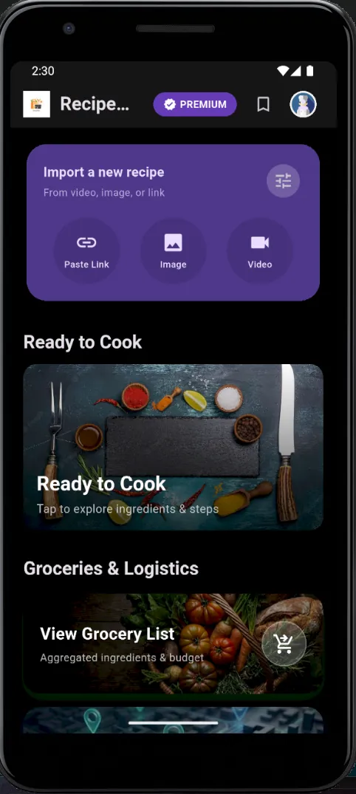
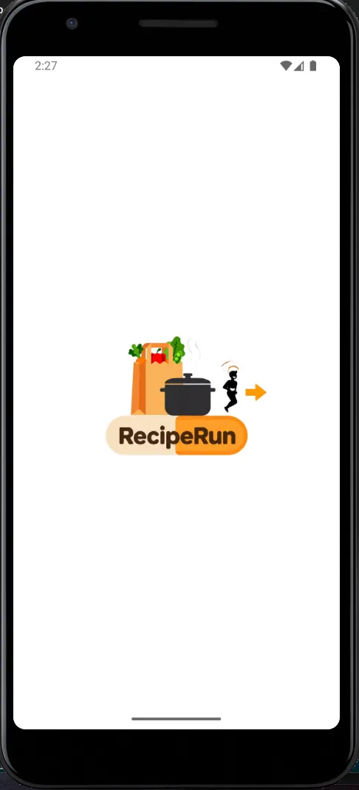
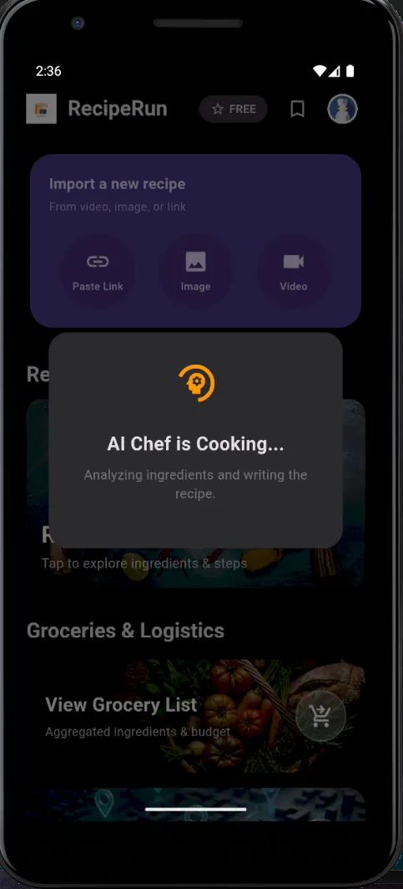
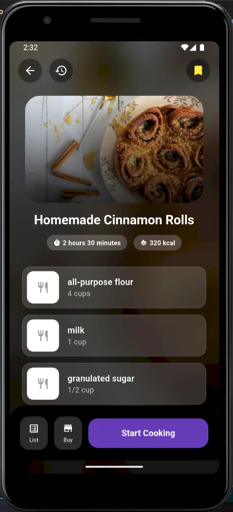
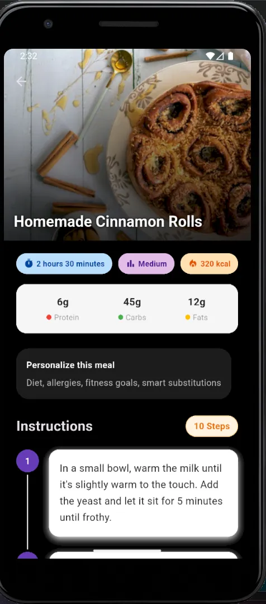
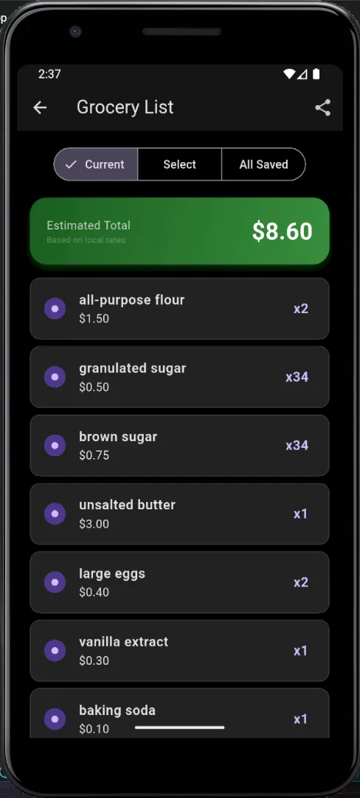
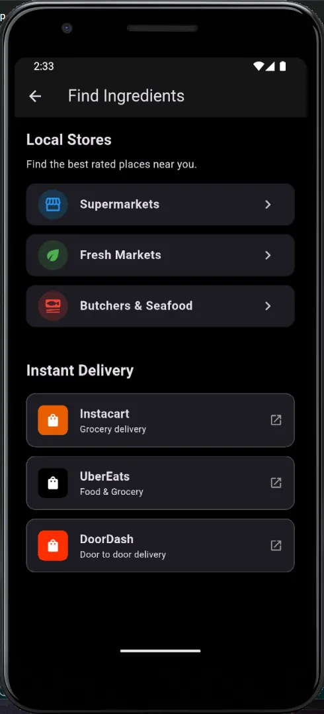
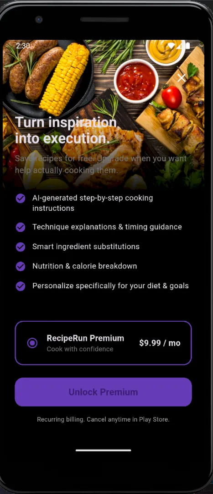

← Selected work
RecipeRun
Turns cooking videos, photos and links into structured recipes, grocery lists and a step-by-step cook mode.

Overview
People save recipes from social media and then can't use them. RecipeRun takes a link, a photo or a video and turns it into a structured recipe card that can feed a grocery list and a guided cook mode.
The app uses Flutter with Provider state, Firebase Auth and Firestore, and TypeScript Cloud Functions. RevenueCat manages subscriptions with a single “premium” entitlement that unlocks cook mode, personalisation and smart ingredient swaps.
What I did
- 01Built the cross-platform Flutter app and the Firestore data model (profiles, preferences, recipes).
- 02Wrote the AI parsing pipeline that turns unstructured posts into normalised JSON (title, ingredients, steps).
- 03Built a routing layer that sends each job to Gemini 2.0 Flash or GPT-4o-mini depending on whether it needs speed, low cost or reasoning.
- 04Integrated RevenueCat purchases and entitlements, and tested them with Play Store internal testing.
- 05Added merged grocery lists, nearby-store maps and location and currency caching.
Signal path
- Video / image / link
- AI router
- Gemini ⇄ OpenAI
- Structured JSON
- Firestore
- Flutter app
Gallery · 7 images
A closer look






